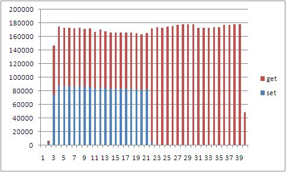
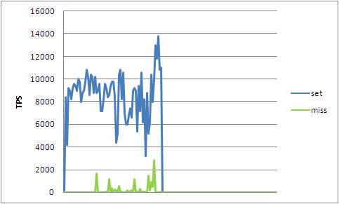
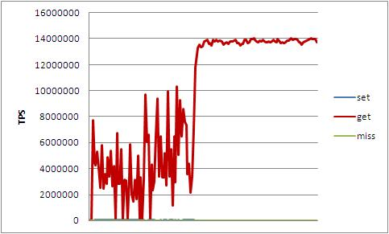

Performance Benchmark
Xixibase
http://code.google.com/p/xixibase/
Source code
svn co http://xixibase.googlecode.com/svn/trunk/client/java/Xixibase-Client/
Test Environment
Software
- Xixibase Server
- Version is 0.1,default install configuration.
- Start with option "-m 16000"
- Java Client
- JVM Version: Sun JDK 1.6.0_27
- JVM args: -server -Xms1024m -Xmx2048m -XX:NewSize=256m -XX:MaxNewSize=256m -XX:PermSize=64m -XX:MaxPermSize=64m
Hardware
- Server and client all run in one machine
- CPU: 4 x Intel(R) Xeon(R) CPU E5530 @ 2.40GHz
- O/S: CentOS 5.3 64bit
- RAM: 16 GiB
Case1
- StressTest (com.xixibase.cache.StressTest)
- Thread: 16
- KeyCount: 100000
- Set OPs/per thread: 100000
- Get OPs/per thread: 300000
- Total start 16 threads, every thread do 100000 'set' op and do 300000 'get' op
- Raw log: StressTest.txt

Case2
- StressTestLocalCache (com.xixibase.cache.StressTestLocalCache)
- Update Thread: 1
- Get Thread: 16
- KeyCount: 200000
- updateReplayCount: 2
- Total start 1 'update' thread and 16 'get' threads. The 'update' thread update the K/V to Xixibase server. The 'get' thread get the K/V from Xixibase server and watch the change of K/V in Xixibase server. When the watched K/V change, the client local cache will get the change immediately.
- Raw log: StressTestLocalCache.txt
- Notes: The TPS of 'get' is to bigger than other, so that give 2 chart.

